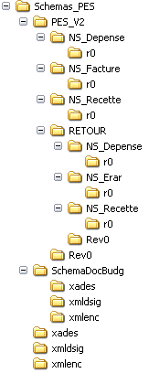

|  |
Les principes d'organisation sont les suivants :
Le répertoire racine SCHEMAS_PES comprend l'ensemble des schémas du PES. Il comprend les répertoires suivants :
- XMLDSIG : répertoire de dépôt du schéma XML "xmldsig-core-schema" de la recommandation XML Signature, associé à l'espace de nom d'URI "http://www.w3.org/2000/9/xmldsig#".
- XADES : répertoire de dépôt du schéma XML "XAdES-core-schema" de la recommandation XML Signature, associé à l'espace de nom d'URI "http://uri:etsi.ord/0193/v1.1.1#"
- XMLENC : répertoire de dépôt du schéma XML "xenc-schema" de la recommandation XML Signature, associé à l'espace de nom d'URI "http://www.w3.org/2001/4/xmlenc#"
- PES_V2 : répertoire de dépôt des schémas XML du PES V2. Ce répertoire contient :
- Les schémas XML servant de composants communs aux différents domaines, déclarant le "NameSpace" d'URI "http://www.minefi.gouv.fr/cp/helios/pes_v2/commun"
- Les sous répertoire PES_V2/Revx comprenant les schémas XML racine associé à la révision d'indice x du PES_V2. Dans le cadre du présent document, il s'agit de la révision "0".
- Les répertoires (NS_Depense, NS_Recette, ...) selon les domaines fonctionnels du PES.
Le sous-répertoire NS_DF_Rx contient les schémas XML du domaine DF à la révision Rx. On y trouve en particulier un ou deux schémas racine spécifique au domaine (correspondant respectivement aux protocoles Aller et Retour). Chacun de ces schémas racine déclare un "NameSpace", lui même incorporé dans les schémas XML racines du répertoire PES_V2/Rx.
- Le répertoire PES_V2/Revx comprend les schémas XML racines (PES_Aller, PES_Retour, PES_Ack, PES_Nack) des messages du PES. Ces messages déclarent selon les cas les espaces de noms d'URI "http://www.minefi.gouv.fr/cp/helios/pes_v2/Revx/Aller" et "http://www.minefi.gouv.fr/cp/helios/pes_v2/Revx/Retour" et incorporent :
- Les espaces de noms de XML Signature, Xades et Encryption
- Les espaces de noms spécifiques aux domaines fonctionnels du PES dans la version correspondant à la publication de Revx.
La déclaration des messages (PES Aller, PES_Retour, PES_Acquit) positionne l'indicateur «ElementFormDefault» à «unqualified», de sorte que les instances d'éléments ne seront pas qualifiées (la référence aux NameSpace sera masquée dans les déclarations de balise) dans les documents instances, à l'exception de l'élément racine du document. Toutefois, ce point ne s'applique pas aux références des éléments issus des syntaxes normalisées (XML Signature,…) qui sont pleinement qualifiées.
|